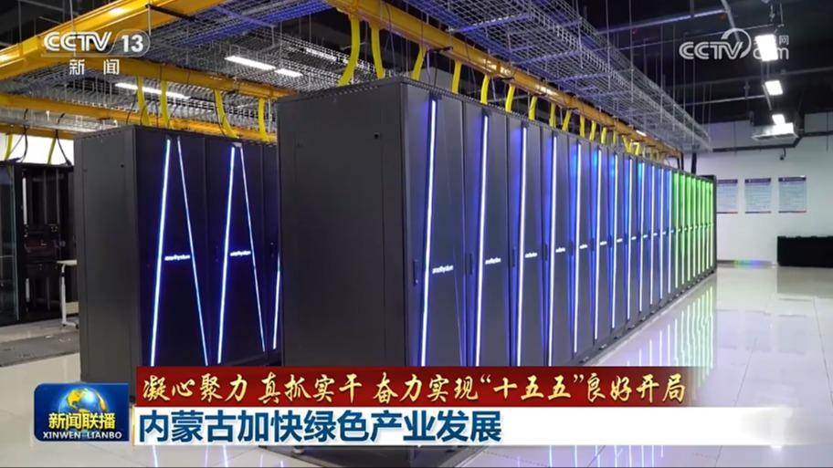
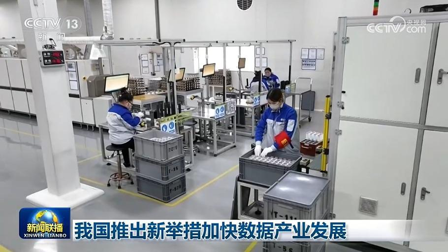
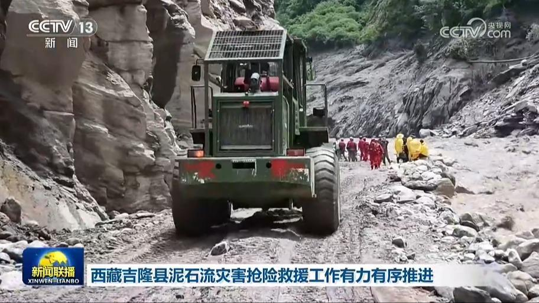
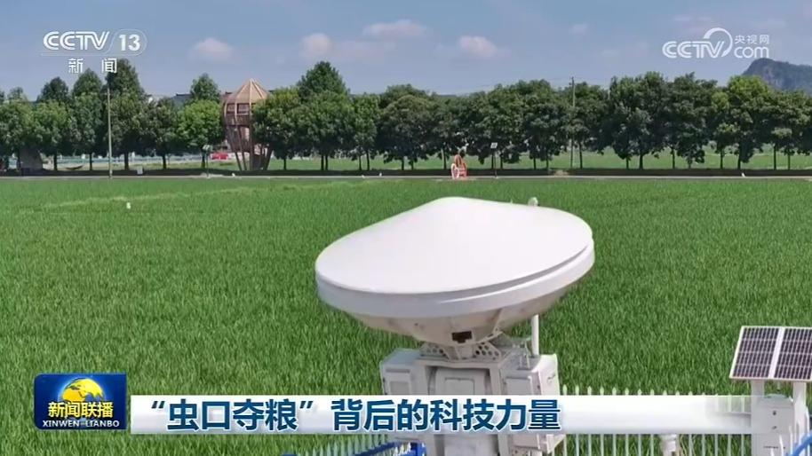
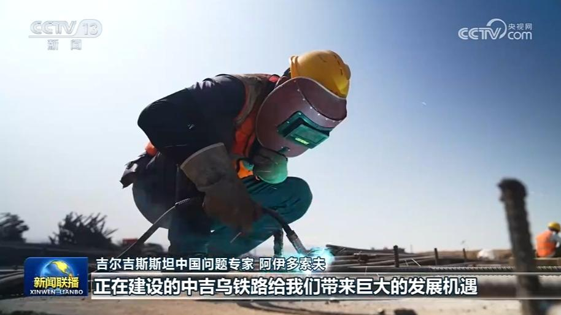

01
习近平离京出席2026年上海合作组织峰会并对吉尔吉斯斯坦、埃及进行国事访问
8月30日上午，国家主席习近平乘专机离开北京，赴比什凯克出席2026年上海合作组织峰会，应吉尔吉斯斯坦总统扎帕罗夫、埃及总统塞西邀请对两国进行国事访问。
8月30日上午，国家主席习近平乘专机离开北京，赴比什凯克出席2026年上海合作组织峰会，应吉尔吉斯斯坦总统扎帕罗夫、埃及总统塞西邀请对两国进行国事访问。
当地时间8月30日下午，国家主席习近平乘专机抵达比什凯克，应吉尔吉斯斯坦总统扎帕罗夫邀请，出席2026年上海合作组织峰会并对吉尔吉斯斯坦进行国事访问。
在中国国家主席习近平出席2026年上海合作组织峰会并对吉尔吉斯斯坦进行国事访问之际，当地时间8月30日，由中国中央广播电视总台制作的《平“语”近人——习近平喜欢的典故》（多语种版）启播活动在吉尔吉斯斯坦首都比什凯克举行。吉尔吉斯斯坦总统扎帕罗夫发来贺信，对节目的启播表示祝贺。

“十五五”时期，内蒙古立足资源禀赋与产业基础，加快发展新兴产业，推进传统产业绿色低碳转型，持续提升发展质效。

记者从国家数据局了解到，我国将推出一系列新举措加快数据产业发展：在32个城市启动新一批数据标注先行先试，为人工智能训练提供数据支撑；探索适配产业实际的词元商业模式，更好助力千行百业数智化转型；14家央国企开放超60亿条高价值数据，促进数据在应用场景中发挥价值；完善数据要素相关学科专业布局，实施数据领域高技能人才集群培养计划。
市场监管总局公布数据显示，上半年，全国新设外商投资企业3.5万户，同比增长7.0%。上半年，共建“一带一路”国家、阿拉伯国家、非盟国家合计在华新设企业1.1万户，分别增长19.3%、20.6%、42.8%。消费市场成为吸引外资的新方向，上半年，卫生和社会工作、批发和零售业、住宿和餐饮业新设外商投资企业增速分别为27.1%、11.9%和11.7%，中国庞大市场对外资吸引力持续提升。

继续关注西藏日喀则市吉隆县泥石流灾害救援工作进展。截至29日18时，灾害已造成16人遇难、546人失联。目前，抢险救援救灾各项工作仍在紧张有序推进。
8月下旬，秋粮进入产量形成关键期。各地依靠科技，加强智慧化田间管理，推动粮食稳产增收。

虫害是影响农业生产的一大威胁，守住粮食安全就要“虫口夺粮”。如今，一张全球规模最大的昆虫雷达监测网正不断织密，全天候守护着大国粮仓。
今年以来，国家围绕产业发展需要，开展针对性职业技能培训，不断提升劳动者的就业能力。
《中华人民共和国医疗保障法》近日出台，并将于明年1月1日起正式施行。一张以基本医保为主体、多重保障协同发力的多层次医疗保障网正加速织密，持续提升亿万群众就医获得感。
到2030年我国将基本建成现代农产品产地市场体系

吉尔吉斯斯坦各界人士表示，欢迎习近平主席对吉尔吉斯斯坦进行国事访问，期待在两国元首引领下，持续深化战略互信，拓展互利合作，传承世代友好，推动中吉新时代全面战略伙伴关系迈上新台阶。
中塞合作建设的人形机器人工厂启动量产